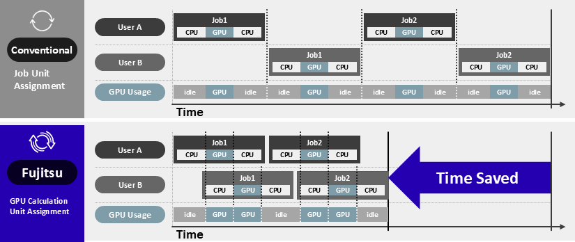

AI Computing Broker (ACB) User Manual
1. Introduction
1.1. Overview
Fujitsu AI Computing Broker (ACB) is a runtime-aware middleware that optimizes GPU allocation and manages memory oversubscription, resulting in improved efficiency, higher throughput, and reduced computing costs.
Key Features:
- Runtime-Aware GPU Allocation: Monitors AI frameworks to allocate GPUs dynamically as needed
- Full Memory Access: Active programs have access to the full GPU memory
- Advanced Scheduling: Employs techniques like backfilling to optimize job placement and maximize aggregate utilization
- Fast Deployment: No code changes required in Automatic Mode

1.2. ACB Operation Modes
ACB supports two primary operation modes:
| Mode | Description | Use Case | Code Changes Required |
|---|---|---|---|
| Automatic Mode | Uses agarun driver to automatically manage GPU allocation |
Standard PyTorch applications | None - zero code changes |
| Manual Mode | Direct API integration for fine-grained control | Performance-critical apps, specialized workflows | Minimal - add API calls |
Both modes support: - Single-GPU jobs: Standard training/inference on one GPU - Multi-GPU DDP (Distributed Data Parallel): Distributed training across multiple GPUs
1.3. Quick Start Guide
| What do you want to do? | Go to Section |
|---|---|
| Install ACB | Section 2: Installation & Setup |
| Start GPU Assigner | Section 3.1: Launching GPU Assigner |
| Run existing PyTorch code without changes | Section 4: Automatic Mode |
| Fine-tune GPU allocation with API calls | Section 5: Manual Mode |
| Train with DDP (multi-GPU) | Section 6: DDP Mode |
| Deploy ACB with Docker | Section 9: Docker Deployment |
| Troubleshoot errors | Section 8: Exit Codes |
1.4. Recommended Environment
| Component | Version / Details |
|---|---|
| OS | Ubuntu 20.04.4 LTS + |
| GPU Driver | Driver: 535.171.04+ CUDA: 12.2+ |
| Python | Python 3.10+ |
| Python Libraries | torch 2.2.1+ |
Note: Compatibility with newer versions of TensorFlow (2.16+) and Keras 3 is not currently supported. For best results, use the recommended versions listed above.
2. Installation & Setup
2.1. Installation
2.2. License Setup
On-Premises License
Place the license.lic file in the working directory where you run gpu_assigner. The application will automatically verify the license upon startup.
Cloud License
Configure the following environment variable with the API key provided to you:
Note: Both
license.licandACB_KEYare provided by Fujitsu. To request access, please visit: https://en-documents.research.global.fujitsu.com/ai-computing-broker/
3. Using GPU Assigner
3.1. Launching GPU Assigner
Before running a user program that supports ACB, start gpu_assigner:
Confirm that it has been started:
3.2. Selecting GPU Devices
In systems with multiple GPUs, ACB allows you to specify which devices should be managed by the GPU Assigner.
By default, gpu_assigner allocates all available GPUs to user programs. To restrict ACB to specific devices, use the --gpu-list option when starting the assigner.
- Device IDs correspond to those shown by the
nvidia-smicommand - Multiple devices should be comma-separated (e.g.,
0,1,2)
Example:
To start the GPU Assigner using GPU devices 0, 1, and 2:
3.3. Job Scheduling Modes
The AI Computing Broker (ACB) supports multiple scheduling strategies to optimize GPU utilization across diverse workloads. Each scheduler is designed for specific use cases and can be selected via the --scheduler flag when starting the GPU Assigner.
3.3.1. simple: First-In, First-Out Scheduling (Default)
This is the default scheduler, operating on a First-In, First-Out (FIFO) basis. Jobs are assigned to GPUs in the order they are submitted. Each job receives dedicated GPU resources, and the scheduler prioritizes completing jobs in their submission order. This scheduler is suitable for single-GPU, single-node workloads where simplicity and predictable job execution order are paramount.
Use --scheduler simple to explicitly enable this scheduler.
3.3.2. gpu-sharing: Concurrent Jobs on a Single GPU
This scheduler enables multiple jobs to share a single GPU, provided their combined memory usage fits within the GPU's capacity. It is ideal for lightweight models or inference tasks that do not require full GPU memory.
To use the gpu-sharing scheduler, specify --scheduler gpu-sharing when starting gpu_assigner.
3.3.3. gpu-affinity: Optimized Scheduling for Multi-GPU Jobs (Recommended)
The gpu-affinity scheduler is designed for workloads that span multiple GPUs. It builds on FIFO scheduling but introduces two advanced features to improve efficiency:
- Backfill Scheduling: Opportunistically fills idle GPU slots with smaller jobs while larger jobs are queued, increasing overall GPU utilization without strictly following job submission order
- GPU Affinity: Prevents GPU migration during job execution by assigning jobs to specific GPUs, reducing memory overhead and improving performance by maintaining memory locality
This scheduler is ideal for environments where job sizes vary and minimizing memory fragmentation is critical.
To enable gpu-affinity, start the GPU Assigner with the following command:
3.4. gpu_assigner CLI Reference
- GPU Assigner Options Help:
gpu_assigner -h
Displays a list of GPU Assigner options.
$ gpu_assigner -h
usage: gpu_assigner [-h]
[--address ADDRESS]
[--port PORT]
[--pid-file-path PID_FILE_PATH]
{start,status,stop} ...
positional arguments:
{start,status,stop} GPU Assigner commands
start start GPU Assigner
status show the status of GPU Assigner
stop stop GPU Assigner
options:
-h, --help show this help message and exit
GPU Assigner options:
--address ADDRESS GPU Assigner address (default: 127.0.0.1)
--port PORT GPU Assigner port (default: 11234)
Pid File options:
--pid-file-path PID_FILE_PATH
pid file path (default: $HOME/.acb/gpu-assigner.pid)
- Changing the Address (
--address)
The default address used by GPU Assigner is 127.0.0.1.
To use a different address, set it with the --address option at runtime.
The --address option must be specified before the start/status/stop commands.
```sh title="GPU_assigner options"
gpu_assigner --address <IP address> [start|status|stop]
```
- Changing the Port Number (
--port)
The default port number used by GPU Assigner is 11234.
To use a different port number, set it with the --port option at runtime.
The --port option must be specified before the start/status/stop commands.
When executing a user program using ACB with a custom port, set the port number in the environment variable AGA_GPU_ALLOC_SERVER_PORT before running agarun. For details, refer to section 4.1.
- Specifying the PID File (
--pid-file-path)
A PID file is created to manage the process ID and state of the GPU Assigner. By default, $HOME/.acb/gpu-assigner.pid is created.
To change the path of the PID file, specify it with the --pid-file-path option at runtime.
The --pid-file-path option must be specified before the start/status/stop commands.
3.5. gpu_assigner start Arguments
Arguments for the gpu_assigner start command should be specified after the start command.
- Help for the
gpu_assigner startcommand:gpu_assigner start -h
Displays a list of arguments for gpu_assigner start.
```
$ gpu_assigner start -h
usage: gpu_assigner start [-h] [--exe-est-start-count EXE_EST_START_COUNT]
[--exe-est-latest-count EXE_EST_LATEST_COUNT] [--exe-est-interval EXE_EST_INTERVAL]
[--exe-est-percentile EXE_EST_PERCENTILE]
[--exe-est-default-execution-time EXE_EST_DEFAULT_EXECUTION_TIME]
[--gpu-assigner-working-directory GPU_ASSIGNER_WORKING_DIRECTORY]
[--gpu-assigner-max-workers GPU_ASSIGNER_MAX_WORKERS]
[--gpu-assigner-execution-time GPU_ASSIGNER_EXECUTION_TIME] [--log-path LOG_PATH] [-v]
[--scheduler SCHEDULER] [--gpu-list GPU_LIST]
[--mem-est-start-count MEM_EST_START_COUNT] [--mem-est-interval MEM_EST_INTERVAL]
[--mem-est-data-max-len MEM_EST_DATA_MAX_LEN]
[--mem-est-percentile MEM_EST_PERCENTILE] [--mem-est-fixed-ratio MEM_EST_FIXED_RATIO]
[--mem-est-select-strategy MEM_EST_SELECT_STRATEGY]
[--res-mem-manager-resident-memory-threshold RES_MEM_MANAGER_RESIDENT_MEMORY_THRESHOLD]
options:
-h, --help show this help message and exit
Execution Time Estimator (exe-est) options:
--exe-est-start-count EXE_EST_START_COUNT
the count at which the estimator starts (default: 10)
--exe-est-latest-count EXE_EST_LATEST_COUNT
the latest count of execution time which the estimator uses. (default: 100)
--exe-est-interval EXE_EST_INTERVAL
the interval at which the estimator updates (default: 10)
--exe-est-percentile EXE_EST_PERCENTILE
the percentile used by the estimator. (default: 0.9)
--exe-est-default-execution-time EXE_EST_DEFAULT_EXECUTION_TIME
set the default execution time of a job with unknown execution time (msec). (default: 0)
GPU Assigner options:
--gpu-assigner-working-directory GPU_ASSIGNER_WORKING_DIRECTORY
working directory of GPU Assigner (default: None)
--gpu-assigner-max-workers GPU_ASSIGNER_MAX_WORKERS
max workers of GPU Assigner (default: 128)
--gpu-assigner-execution-time GPU_ASSIGNER_EXECUTION_TIME
Execution time of GPU Assigner (default: None)
Log options:
--log-path LOG_PATH log path (default: $HOME/.acb/gpu-assigner.log)
-v, --verbose verbose logging (default: False)
Scheduler options:
--scheduler SCHEDULER
scheduler type (default: simple)
--gpu-list GPU_LIST allowed GPU device indices (default: None)
Peak Memory Estimator (mem-est) options:
--mem-est-start-count MEM_EST_START_COUNT
the count at which the estimator starts (default: 10)
--mem-est-interval MEM_EST_INTERVAL
the interval at which the estimator updates (default: 10)
--mem-est-data-max-len MEM_EST_DATA_MAX_LEN
the latest count of peak memory usage which the estimator uses. (default: 100)
--mem-est-percentile MEM_EST_PERCENTILE
the percentile used by the estimator. (default: 0.99)
--mem-est-fixed-ratio MEM_EST_FIXED_RATIO
the ratio by which the estimator multiply the max peak memory usage. (default: 1.1)
--mem-est-select-strategy MEM_EST_SELECT_STRATEGY
whether to use max or min for calculating the allocation memory from user-given and
system-detected memories (default: min)
Resident memory manager options:
--res-mem-manager-resident-memory-threshold RES_MEM_MANAGER_RESIDENT_MEMORY_THRESHOLD
set the resident memory threshold of GPU memory (default: 0.25)
```
- Specifying the Log File (
--log-path)
The log file created by GPU Assigner is $HOME/.acb/gpu-assigner.log by default.
To change the log file path, specify it with the --log-path option at runtime.
- Specifying the Scheduler (
--scheduler)
Argument to specify the type of scheduler:
- simple: Default scheduler. Use when all jobs are single-GPU jobs.
- gpu-sharing: Use when all jobs are single-GPU jobs and the memory consumption of the jobs is smaller than the memory size of one GPU.
```sh
gpu_assigner start --scheduler gpu-sharing
```
-
gpu-affinity: Use when executing multi-GPU jobs. -
Specifying GPU Devices (
--gpu-list)
Argument to specify which GPUs to use. Pass a comma-separated list of GPU device indices. The default is to use all available GPUs.
-
Execution Time Prediction Feature Options
-
--exe-est-default-execution-time <time:int>: Maximum execution time (in milliseconds) used when the job's execution time is not registered (default: 0). Used to find backfillable jobs when the execution time of a job scheduled from the FIFO queue is unknown. --exe-est-start-count <start_count:int>: The number of data points required to start estimating the maximum execution time (default: 10)--exe-est-latest-count <latest_count:int>: The number of recent data points to use for maximum execution time estimation (default: 100)--exe-est-interval <interval:int>: The number of data points between updates to the maximum execution time estimate (default: 10)-
--exe-est-percentile <percentile:float>: The percentile value for maximum execution time estimation (default: 0.9) -
Runtime Context Memory Management Feature Options
-
--res-mem-manager-resident-memory-threshold <threshold:float>: Threshold for limiting GPU migration of single-GPU jobs, specified as the ratio of runtime context memory in GPU memory (default: 0.25). If the amount of context memory in GPU memory is less than the threshold, allocation ignoring GPU Affinity is possible.
4. Operation Mode 1: Automatic Mode
4.1. Overview
Automatic Mode allows you to run unmodified PyTorch programs with ACB by simply using the agarun driver command. This mode requires:
- Zero code changes in your application
- Setting the AGA_ENABLE_AUTO=1 environment variable
- Running your program through agarun
4.2. Basic Usage
Execute user programs by passing them as arguments to the driver command:
If your program uses command-line options, add -- after agarun:
4.3. Environment Variables
| Variable | Description | Default | Example |
|---|---|---|---|
AGA_ENABLE_AUTO |
Enable Automatic Mode (required) | - | 1 |
AGA_GPU_ALLOC_SERVER_PORT |
GPU Assigner port number | 11234 |
12345 |
AGA_REQUEST_DEVICE |
Device to request | any |
cuda, cpu |
Changing the Port Number:
Specifying Device Type:
any: Request GPU, run on CPU if unavailable (default)cudaorgpu: Request GPU, wait if none availablecpu: Use CPU only
4.4. agarun Command Reference
usage: agarun [-h] [--without-aga] [--history-path HISTORY_PATH]
[--checkpoints-topdir CHECKPOINTS_TOPDIR]
args [args ...]
CLI to run your program with AGA enabled
positional arguments:
args Command to run with AGA enabled
options:
-h, --help show this help message and exit
--without-aga Disable GPU scheduling with AGA (for assessment purpose)
--history-path HISTORY_PATH
Path of the job history file (default: $HOME/.acb/job-history.log)
--checkpoints-topdir CHECKPOINTS_TOPDIR
Directory where checkpoint directories for each job are stored
Job History Tracking (--history-path):
Job history records timestamps and call arguments during ACB job execution, useful for analyzing job execution status and ACB effectiveness.
4.5. Example: Running Single-GPU Jobs
Step 1: Create Sample Program
Create sample_pytorch.py:
"""Sample script using Automatic AGA (pytorch version)."""
import random
from time import sleep
import numpy as np
import torch
import torch.nn as nn
import torch.optim as optim
# [AGA] When using AGA, use get_raw_device function to get the actual device
try:
# [AGA] Ensure running in auto AGA mode if the program was launched from agarun
from adaptive_gpu_allocator.env import ensure_auto_mode, launched_from_agarun
from adaptive_gpu_allocator.pytorch_automatic import get_raw_device as get_device
if launched_from_agarun():
ensure_auto_mode()
except ImportError:
def get_device(tensor):
return tensor.device
# Time to sleep for checking GPU auto-release
sleep_time = 3
# Define the network architecture
class Net(nn.Module):
def __init__(self):
super(Net, self).__init__()
self.fc1 = nn.Linear(20, 10) # Input layer
self.fc3 = nn.Linear(10, 10)
self.fc2 = nn.Linear(10, 1) # Output layer
def forward(self, x):
x = torch.relu(self.fc1(x))
for i in range(20):
x = torch.relu(self.fc3(x))
x = self.fc2(x)
return x
def fix_seeds():
# fix seeds for reproducibility
seed = 0
random.seed(seed)
np.random.seed(seed)
torch.manual_seed(seed)
torch.backends.cudnn.benchmark = False
torch.backends.cudnn.deterministic = True
def get_training_data():
# Assume we have some data in X_train and y_train
X_train = torch.randn(10000000, 20, device="cuda") # 10000000 samples, 20 features each
y_train = torch.randn(10000000, 1, device="cuda") # 10000000 samples, 1 target value each
return X_train, y_train
def init_model_and_optimizer():
# Create the network
net = Net()
# Define a Loss function and optimizer
optimizer = optim.Adam(net.parameters())
return net, optimizer
def train_step(model, optimizer, X_train, y_train, epoch):
# Zero the gradients
optimizer.zero_grad()
# Forward pass
outputs = model(X_train)
# Calculate loss
criterion = nn.MSELoss()
loss = criterion(outputs, y_train)
# Backward pass and optimization
loss.backward()
optimizer.step()
print(f"Epoch {epoch}, Loss: {loss.item()} on {get_device(loss)}")
# Sleep for a few seconds to auto-release GPU
print(f"sleep {sleep_time} sec")
sleep(sleep_time)
def main():
fix_seeds()
# init model and aga client
net, optimizer = init_model_and_optimizer()
X_train, y_train = get_training_data()
net.to(device="cuda")
n_epoch = 5
for epoch in range(n_epoch):
train_step(net, optimizer, X_train, y_train, epoch)
if __name__ == "__main__":
main()
Step 2: Run Single Job
Execute the program using agarun:
Expected Output:
Epoch 0, Loss: 1.0307303667068481 on cuda:0
sleep 3 sec
Epoch 1, Loss: 1.029717206954956 on cuda:1
sleep 3 sec
Epoch 2, Loss: 1.0287171602249146 on cuda:0
sleep 3 sec
[...]
Note how the GPU device changes dynamically between epochs as ACB manages GPU allocation.
4.6. Example: Running Multiple Jobs
This example shows how ACB manages more jobs than available GPUs (e.g., 3 jobs on 2 GPUs).
Running 3 Processes in a 2-GPU Environment
AGA_ENABLE_AUTO=1 agarun python sample_pytorch.py >log1 &
AGA_ENABLE_AUTO=1 agarun python sample_pytorch.py >log2 &
AGA_ENABLE_AUTO=1 agarun python sample_pytorch.py >log3 &
Key Observations:
- GPUs are allocated dynamically when needed
- Each process may use different GPUs at different times
- ACB automatically schedules GPU access to maximize utilization
Sample Output (log1):
Epoch 0, Loss: 1.0307303667068481 on cuda:1
sleep 3 sec
Epoch 1, Loss: 1.029717206954956 on cuda:1
sleep 3 sec
Epoch 2, Loss: 1.0287171602249146 on cuda:1
sleep 3 sec
Epoch 3, Loss: 1.0277304649353027 on cuda:0 # GPU switched
sleep 3 sec
[...]
5. Operation Mode 2: Manual Mode
5.1. Overview
Manual Mode provides direct API integration for fine-grained control over GPU allocation. Use this mode when:
- You need maximum performance tuning
- Your application has specialized GPU workflows
- You want explicit control over GPU allocation timing
Key Differences from Automatic Mode:
| Aspect | Automatic Mode | Manual Mode |
|---|---|---|
| Code changes | None | Minimal API calls required |
| Control | Automatic | Explicit control points |
| Use case | Standard applications | Performance-critical apps |
5.2. Integration Steps
Follow these steps to integrate ACB Manual Mode into your PyTorch application:
- Import
PyTorchAdaptiveGPUAllocator - Import
ensure_manual_mode_without_restart - Execute
ensure_manual_mode_without_restart()- validates environment variables - Initialize
PyTorchAdaptiveGPUAllocatorwith model and optimizer - Mark GPU processing boundaries using
on_device_begin()andon_device_end()
5.3. Sample Code
import random
from time import sleep
import numpy as np
import torch
import torch.nn as nn
import torch.optim as optim
# [AGA] Import Manual Mode API
from adaptive_gpu_allocator.env import ensure_manual_mode_without_restart
from adaptive_gpu_allocator.pytorch import PyTorchAdaptiveGPUAllocator
# [AGA] Ensure running in manual mode
ensure_manual_mode_without_restart()
# Global AGA client variable
aga = None
class Net(nn.Module):
def __init__(self):
super(Net, self).__init__()
self.fc1 = nn.Linear(20, 10)
self.fc3 = nn.Linear(10, 10)
self.fc2 = nn.Linear(10, 1)
def forward(self, x):
x = torch.relu(self.fc1(x))
for i in range(20):
x = torch.relu(self.fc3(x))
x = self.fc2(x)
return x
def train_step(model, optimizer, X_train, y_train, epoch):
global aga
# [AGA] Mark GPU processing start
aga.on_device_begin()
optimizer.zero_grad()
outputs = model(X_train)
criterion = nn.MSELoss()
loss = criterion(outputs, y_train)
loss.backward()
optimizer.step()
print(f"Epoch {epoch}, Loss: {loss.item()}")
# [AGA] Mark GPU processing end
aga.on_device_end()
print(f"sleep 3 sec")
sleep(3)
def main():
global aga
# Initialize model and optimizer
net = Net()
optimizer = optim.Adam(net.parameters())
# [AGA] Initialize ACB client
aga = PyTorchAdaptiveGPUAllocator(net, optimizer, device="cuda")
# Prepare training data
X_train = torch.randn(10000000, 20, device="cuda")
y_train = torch.randn(10000000, 1, device="cuda")
# Training loop
n_epoch = 5
for epoch in range(n_epoch):
train_step(net, optimizer, X_train, y_train, epoch)
# [AGA] Finalize ACB
aga.finalize()
if __name__ == "__main__":
main()
5.4. Running Manual Mode Programs
Execute Manual Mode programs using agarun without AGA_ENABLE_AUTO:
5.5. Key API Methods
| Method | Description | When to Use |
|---|---|---|
on_device_begin() |
Mark start of GPU processing | Before GPU-intensive computations |
on_device_end() |
Mark end of GPU processing | After GPU-intensive computations |
finalize() |
Clean up ACB resources | At program end |
6. Distributed Data Parallel (DDP) Mode
6.1. Overview
ACB supports PyTorch Distributed Data Parallel (DDP) for multi-GPU training. DDP mode works with both Automatic and Manual modes, allowing distributed training across multiple GPUs with ACB's dynamic allocation.
Key Features:
- Supports
torchrunlauncher - Compatible with NCCL (GPU) and GLOO (CPU) backends
- Dynamic GPU allocation per process
- Automatic model and optimizer state management
6.2. Integration Steps for DDP
- Import
PyTorchDDPAdaptiveGPUAllocator - Remove explicit GPU specifications (
set_device,to,device_ids, etc.) - Leave backend empty in
init_process_group()- ACB prepares both NCCL and GLOO - Use
local_rankfor process identification - Initialize
PyTorchDDPAdaptiveGPUAllocatorwith model, optimizer, world_size, and rank - Mark GPU processing boundaries with
on_device_begin()andon_device_end() - Use
move_tensor_to_device()instead of.to()for tensor transfers - Call
aga.finalize()beforedestroy_process_group()
6.3. Sample DDP Code
"""
Usage:
agarun -- torchrun --standalone --nproc_per_node=2 ddp_sample.py
"""
import os
import torch
import torch.nn as nn
import torch.optim as optim
from torch.distributed import init_process_group, destroy_process_group
from torch.nn.parallel import DistributedDataParallel as DDP
from torch.utils.data.distributed import DistributedSampler
# [AGA] Import DDP ACB client
from adaptive_gpu_allocator.pytorch_ddp import PyTorchDDPAdaptiveGPUAllocator
def ddp_setup():
# [AGA] Leave backend empty to prepare both NCCL and GLOO
init_process_group()
class Trainer:
def __init__(self, model, optimizer, aga=None):
self.local_rank = int(os.environ["LOCAL_RANK"])
self.model = DDP(model)
self.optimizer = optimizer
self.aga = aga
def train_step(self, data, target):
# [AGA] Mark GPU processing start
self.aga.on_device_begin()
self.optimizer.zero_grad()
output = self.model(data)
loss = nn.functional.mse_loss(output, target)
loss.backward()
self.optimizer.step()
# [AGA] Mark GPU processing end
self.aga.on_device_end()
return loss.item()
def main():
ddp_setup()
# Initialize model and optimizer
model = nn.Linear(20, 1)
optimizer = optim.Adam(model.parameters())
# [AGA] Initialize DDP ACB client
local_rank = int(os.environ["LOCAL_RANK"])
world_size = int(os.environ["WORLD_SIZE"])
aga = PyTorchDDPAdaptiveGPUAllocator(
model,
optimizer,
world_size=world_size,
rank=local_rank,
device="cuda"
)
trainer = Trainer(model, optimizer, aga)
# Training loop
for epoch in range(5):
# Create sample data
data = torch.randn(100, 20)
target = torch.randn(100, 1)
# [AGA] Move tensors to device
data = aga.move_tensor_to_device(data)
target = aga.move_tensor_to_device(target)
loss = trainer.train_step(data, target)
if local_rank == 0:
print(f"Epoch {epoch}, Loss: {loss}")
# [AGA] Finalize before destroying process group
aga.finalize()
destroy_process_group()
if __name__ == "__main__":
main()
6.4. Running DDP Programs
Use torchrun with agarun:
Parameters:
--standalone: Single-node training--nproc_per_node=N: Number of processes (typically = number of GPUs)
6.5. DDP API Reference
PyTorchDDPAdaptiveGPUAllocator.__init__()
Arguments:
| Parameter | Type | Description | Required |
|---|---|---|---|
model |
torch.nn.Module |
PyTorch model | Yes |
optimizer |
torch.optim.Optimizer |
Optimizer (e.g., Adam) | Yes |
world_size |
int |
Total number of processes | Yes |
rank |
int |
Process ID (0 to world_size-1) | Yes |
device |
str |
Device type: any, cuda, gpu, cpu |
Yes |
scheduler |
torch.optim.lr_scheduler |
Learning rate scheduler | No |
Example:
aga = PyTorchDDPAdaptiveGPUAllocator(
model=model,
optimizer=optimizer,
world_size=int(os.environ["WORLD_SIZE"]),
rank=int(os.environ["LOCAL_RANK"]),
device="cuda"
)
move_tensor_to_device(tensor)
Moves a tensor to the appropriate device managed by ACB.
Arguments:
- tensor: Input tensor
Returns: - Tensor on the target device
Example:
7. Stopping the GPU Assigner
gpu_assigner can be terminated via the CLI.
Note that gpu_assigner ignores SIGHUP and SIGINT signals, so sending these signals will not terminate it.
8. Exit Codes & Error Reference
8.1. agarun Exit Codes
| Exit Code | Error Message | Description |
|---|---|---|
| 1 | Error: Invalid value {} for {} |
Invalid value in environment variables used by agarun |
| 1 | Error: Specify your program to run |
No user program specified (agarun executed without arguments) |
| 1 | Error: Failed to communicate with the gpu assigner. |
Cannot communicate with gpu_assigner (check if it's running) |
| 1 | Error: Failed to execute {} |
Failed to start the user program |
| 130 | (None) | agarun terminated with Ctrl-C |
| Varies | (Depends on program) | User program's exit code |
8.2. gpu_assigner Exit Codes
| Exit Code | Error Message | Description |
|---|---|---|
| 0 | WARNING: No command is specified... |
No start/status/stop command specified |
| 2 | (Help message displayed) | Invalid command arguments |
| 65 | ERROR: Could not get a pid from {}. |
Failed to retrieve process ID during status/stop |
| 65 | ERROR: Could not get a correct pid from {}. |
Process ID corrupted during status/stop |
| 69 | ERROR: No GPU assigner is running on {}. |
No running gpu_assigner found during status/stop |
| 69 | WARNING: Could not find GPU assigner process... |
gpu_assigner already terminated during stop |
| 73 | ERROR: Could not create the default directory... |
Failed to create $HOME/.acb during start |
| 75 | ERROR: GPU assigner is already running on {}. |
gpu_assigner already running during start |
| Non-zero | ERROR: Failed to start GPU assigner. |
Failed to start gpu_assigner |
9. Docker Deployment
9.1. Overview
Architecture:
- GPU Assigner Container: Runs gpu_assigner on 0.0.0.0:11234
- User App Container(s): Connects via AGA_GPU_ALLOC_SERVER_ADDRESS
- Network: Containers communicate via Docker bridge network
9.2. GPU Assigner Container
Dockerfile.gpu_assigner:
FROM ubuntu:22.04
RUN apt-get update && \
DEBIAN_FRONTEND=noninteractive apt-get install -y python3 python3-pip && \
apt-get clean && rm -rf /var/lib/apt/lists/*
RUN pip3 install --no-cache-dir ai-computing-broker
EXPOSE 11234
CMD ["gpu_assigner", "--address", "0.0.0.0", "start"]
Key: --address 0.0.0.0 enables container-to-container communication (default 127.0.0.1 blocks external access).
9.3. User Application Containers
Automatic Mode - Dockerfile.user_app_auto:
FROM ubuntu:22.04
RUN apt-get update && \
DEBIAN_FRONTEND=noninteractive apt-get install -y python3 python3-pip && \
apt-get clean && rm -rf /var/lib/apt/lists/*
RUN pip3 install --no-cache-dir torch==2.2.1 "numpy<2" ai-computing-broker
ENV AGA_ENABLE_AUTO=1
ENTRYPOINT ["agarun", "python3"]
Manual Mode - Dockerfile.user_app_manual:
FROM ubuntu:22.04
RUN apt-get update && \
DEBIAN_FRONTEND=noninteractive apt-get install -y python3 python3-pip && \
apt-get clean && rm -rf /var/lib/apt/lists/*
RUN pip3 install --no-cache-dir torch==2.2.1 "numpy<2" ai-computing-broker
ENTRYPOINT ["agarun", "python3"]
DDP Mode - Dockerfile.user_app_ddp:
FROM ubuntu:22.04
RUN apt-get update && \
DEBIAN_FRONTEND=noninteractive apt-get install -y python3 python3-pip && \
apt-get clean && rm -rf /var/lib/apt/lists/*
RUN pip3 install --no-cache-dir torch==2.2.1 "numpy<2" ai-computing-broker
ENTRYPOINT ["agarun", "--"]
CMD ["torchrun", "--standalone", "--nproc_per_node=2"]
9.4. Docker Compose Configuration
docker-compose.yaml:
services:
gpu_assigner:
build:
dockerfile: Dockerfile.gpu_assigner
container_name: acb_gpu_assigner
networks: [acb-network]
deploy:
resources:
reservations:
devices:
- driver: nvidia
count: all
capabilities: [gpu]
healthcheck:
test: ["CMD", "gpu_assigner", "status"]
interval: 10s
timeout: 5s
retries: 3
user_app:
build:
dockerfile: Dockerfile.user_app_auto
depends_on:
gpu_assigner:
condition: service_healthy
environment:
- AGA_GPU_ALLOC_SERVER_ADDRESS=gpu_assigner
volumes:
- ./user_code:/app:ro
working_dir: /app
command: train.py
networks: [acb-network]
deploy:
resources:
reservations:
devices:
- driver: nvidia
count: all
capabilities: [gpu]
networks:
acb-network:
driver: bridge
Key Settings:
- AGA_GPU_ALLOC_SERVER_ADDRESS=gpu_assigner: Container name resolution
- healthcheck: User app waits for GPU Assigner readiness
- volumes: Mount user code (read-only recommended)
9.5. Running with Docker
Docker Compose:
Docker Run:
# GPU Assigner
docker run -d --name acb_gpu_assigner --gpus all --network acb-network acb-gpu-assigner:latest
# User App
docker run --rm --gpus all --network acb-network \
-e AGA_GPU_ALLOC_SERVER_ADDRESS=acb_gpu_assigner \
-v $(pwd)/code:/app:ro -w /app \
acb-user-app-auto:latest train.py
# Multiple Jobs
docker run -d --name job1 --gpus all --network acb-network \
-e AGA_GPU_ALLOC_SERVER_ADDRESS=acb_gpu_assigner \
-v $(pwd)/code:/app:ro acb-user-app-auto:latest model_a.py
docker run -d --name job2 --gpus all --network acb-network \
-e AGA_GPU_ALLOC_SERVER_ADDRESS=acb_gpu_assigner \
-v $(pwd)/code:/app:ro acb-user-app-auto:latest model_b.py
DDP:
docker run --rm --gpus all --network acb-network --shm-size=2g \
-e AGA_GPU_ALLOC_SERVER_ADDRESS=acb_gpu_assigner \
-v $(pwd)/code:/app:ro -w /app \
acb-user-app-ddp:latest torchrun --standalone --nproc_per_node=2 ddp_train.py
Note: --shm-size required for DDP inter-process communication.
9.6. License & Port Configuration
License (Cloud):
License (On-Premises):
Custom Port: